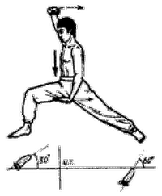

Дракон оборачивается назад

Исходное положение: Стоим, правая нога согнута в колене, левая выпрямлена и отставлена назад. Примерно 70% веса тела приходится на переднюю ногу. Правая рука согнута в локте и поднята над головой, ладонь повернута вверх. Левая рука опущена вниз, кисть отогнута, ладонь повернута вниз, пальцы направлены вперед.
Расслабляясь, на два счета приседаем на выдохе вниз, руки отводим назад, затем, распрямляя правую ногу и сгибая в колене левую, поворачиваемся на 180° влево. Руки при этом меняют положение. На два счета проседаем вниз, руки отводим назад, затем, поворачиваясь на 180° вправо, возвращаемся в исходное положение.
Повторяем 7 раз.
При поворотах старайтесь не приподниматься вверх и выполнять поворот за счет движения бедер. Следите за тем, чтобы отставленная назад нога подошвой полностью касалась пола.
Next up: Журавль тянется к ноге